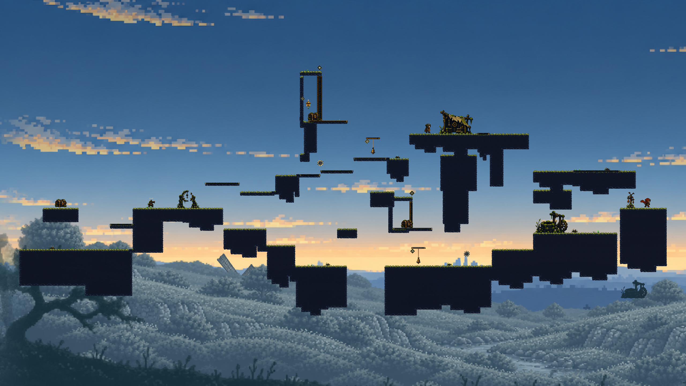
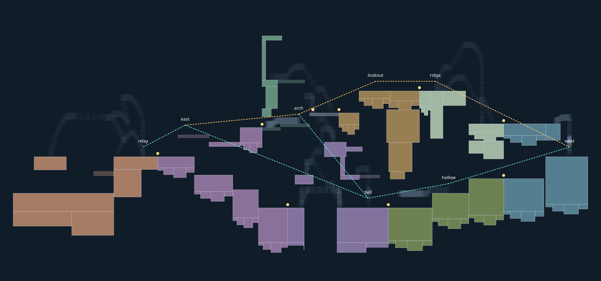
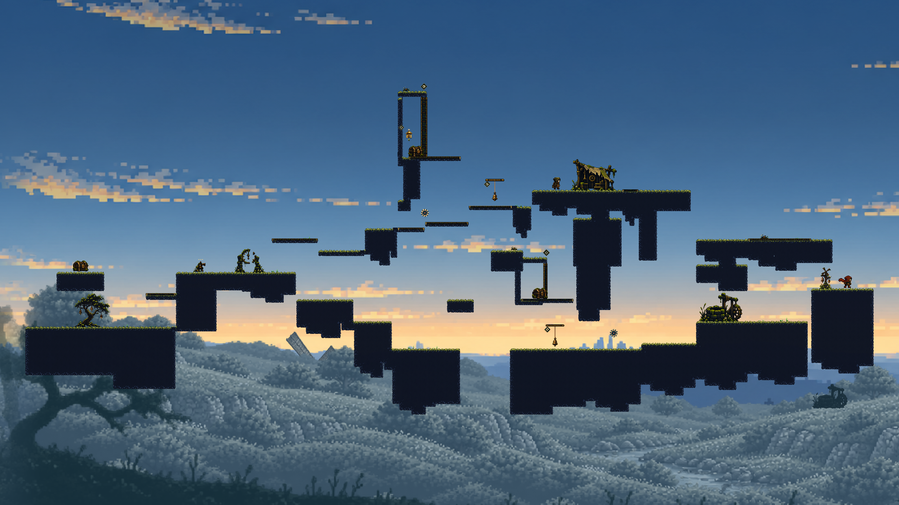
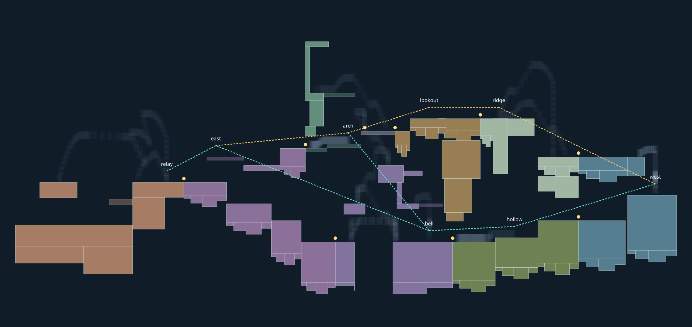
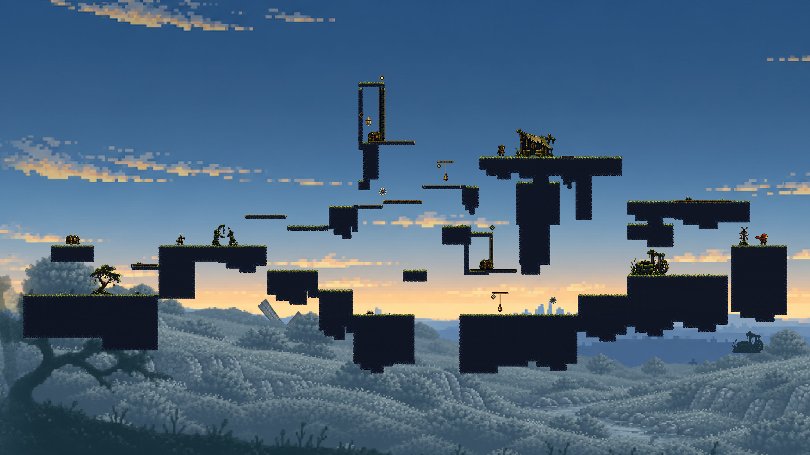
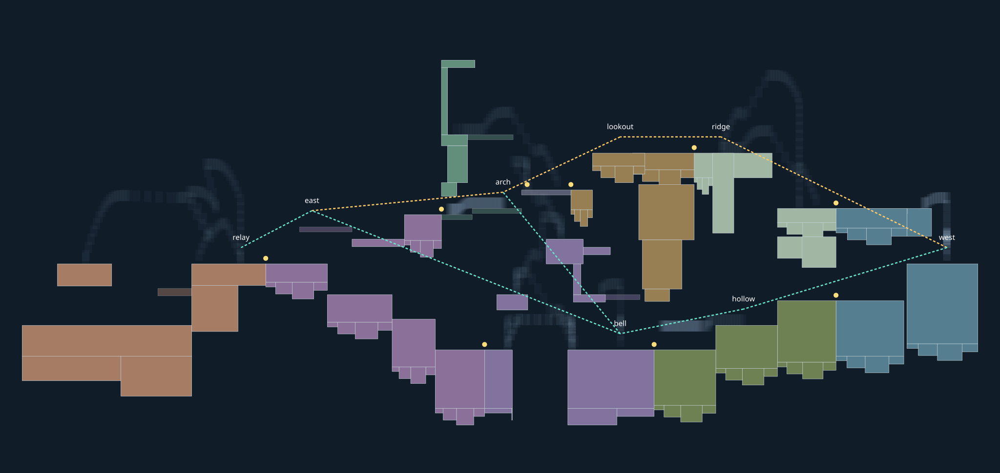
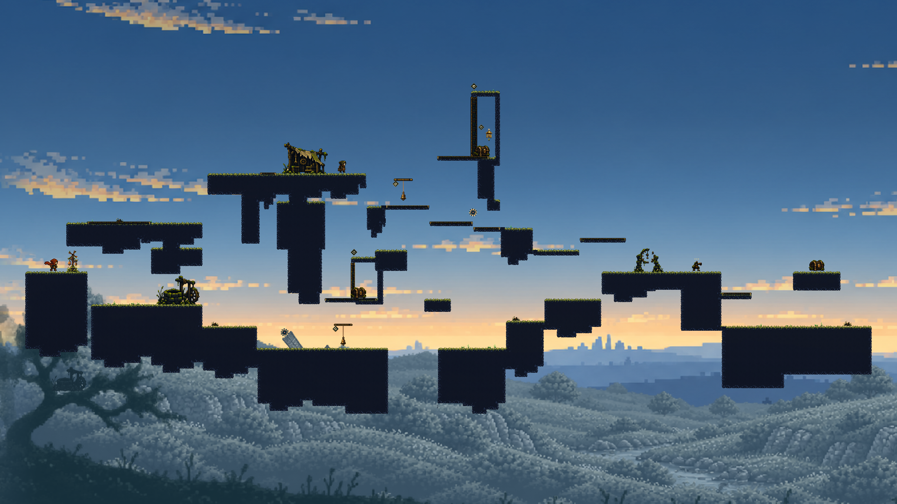
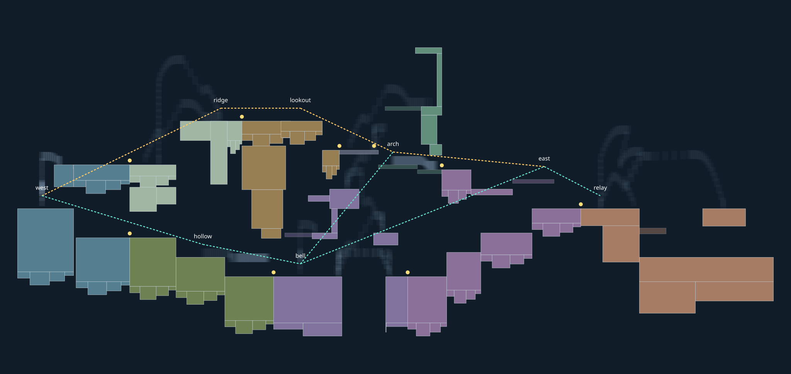
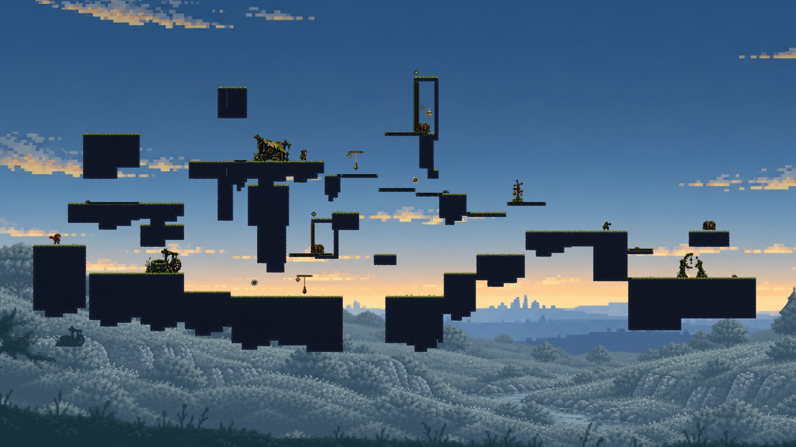

shape-eval-0 · 独立扰动 6/6

真实形状、端口、动作样本与主支路线

原型可运行；尚未证明稳定超过旧管线。五个预定 Seed，无删图、换 Seed 或留出后修复。固定8 Macro、9接缝、双回环、3宝箱和1商店。Map新增地形为0。主线/奖励/回程连续在真实Godot世界中验证。
常规路线 30/30；独立扰动 27/30。同内容旧布局独立扰动 28/30。4个空间签名，去镜像后仅3种岸体组合，探索拓扑仍只有1种。没有把镜像算作探索多样性。
实际Godot手动地图（Seed0） · 所有结果及失败详情JSON · 既有Mission合同 · 既有Exploration合同
空间图的金/青虚线是主支拓扑边，不是实际飞行轨迹；浅白色是父版身体轨迹样本。实际可玩性由下方原生录像及整图物理记录独立验证。
| Seed | 常规 | 独立扰动 | 配对旧布局扰动 | 空间搜索 / 扩展候选 |
|---|---|---|---|---|
| shape-eval-0 | 6/6 | 6/6 | 6/6 | 67.3 ms / 37 |
| shape-eval-1 | 6/6 | 6/6 | 6/6 | 67.5 ms / 42 |
| shape-eval-2 | 6/6 | 5/6 | 5/6 | 21.4 ms / 19 |
| shape-eval-3 | 6/6 | 5/6 | 6/6 | 22.8 ms / 16 |
| shape-eval-4 | 6/6 | 5/6 | 5/6 | 20.1 ms / 26 |









程序输入，不是人工试玩。所有位置、速度、输入、资源、机关、敌人与经济事件逐帧严格核对。保留等待及结束后1秒冻结画面。初次Seed0的JSON轴输入回放有微小浮点差异，失败原件保留；live录像执行与无画面验证相同的冻结Router控制程序，未放宽比较。

旧管线直接使用原布局坐标；新搜索不读取这些位置。两者使用同一角色、内容核心、能力与当前主游戏地标/灯光/前景。新图减少了3块退役门顶盖，两个恢复岸有有限形状变体。上述差异公开，不能把它们单独归功于搜索。
同一候选库下，矩形包围盒拒绝5/5，真实形状搜索可拼5/5。shape-only与shape+action在未破坏的库里选择相同答案，说明本批尚未证实动作约束提高正常样本成功率。刻意反例只加一块邻接岩体：纯形状放行、动作避让拒绝，原生Godot实际落到错误支持面，确认动作样本确实参与约束。
当前动作条件只覆盖落地、已恢复射击、冷却为0、速度≤1的端口。跳跃/反冲由原物理执行。它还不是任意高速空中交接求解器；父版轨迹样本也不是变体的通用证明。每张新图均重新验证18个接缝方向和奖励回程。

此图来自上一轮同一最新main的实际默认生成，明确为历史截图，不是本次配对物理控制。研究图已接入正式岩体、角色、风铃、齿轮、落地地标、局部构图、灯光和前景。整体仍有悬浮岛、横向岸体重复和简单上下层；这些来自有限Macro轮廓与固定骨架，材质不能补救。主游戏的身份配方、连续地貌、生态密度和正式流程更完整。
下一步应先提供数种真正不同的贯通岩体/空洞Macro，加入区域级实体与留白骨架、落点容错余量和动态相位关系，再让搜索比较空间方案；保持新的独立留出。当前结果不能生产准入，也未有人类趣味认可。
收尾合入了main 7bea81d的仓库Module浏览功能；冻结批次的内容和物理源未变。算法冻结 6479908b4c57ab8bfa18775a7dd453ca9e5c8ab2。完整失败、源、输入、物理输出与媒体均版本化归档；详见PR #1研究报告。